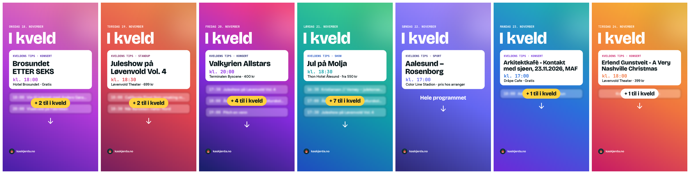
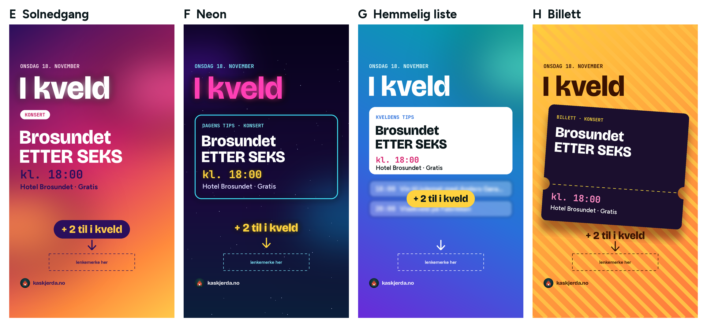
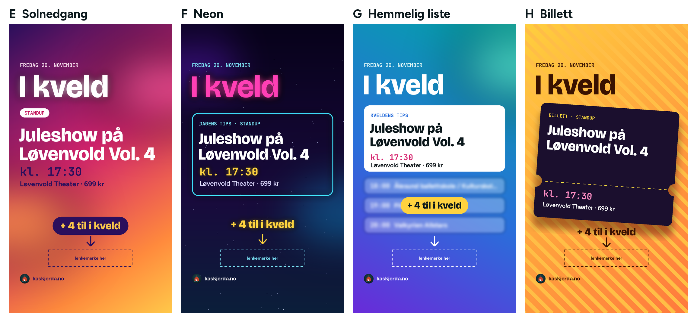
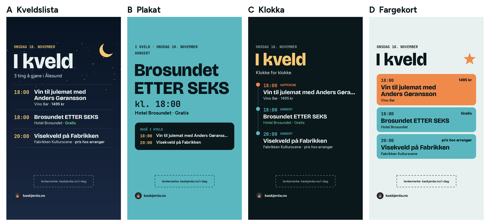
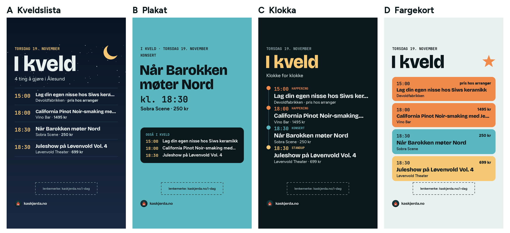

«I kveld»-historien
Designforslag fra 17. nov. 2026 til den daglige Instagram-historien (1080 × 1920). Valgt: G «Hemmelig liste», med fargeovergang etter ukedag. Laget av scripts/ikveld.py.
Valgt: G med farge etter ukedag
Kveldens tips vises helt; resten av kvelden er uskarp med «+ N til i kveld», så folk trykker på lenkemerket under pila. Samme tips gjentas ikke tre dager på rad. Tom kveld: kino.

Runde 2: mer farger, bare ett tips
E Solnedgang, F Neon, G Hemmelig liste, H Billett. Eieren ville ha mer «wow», og at ikke alt skulle vises (da er det ingen grunn til å trykke). runde2.py.


Runde 1: hele kvelden
A Kveldslista, B Plakat, C Klokka, D Fargekort. Viser alt som skjer, ble valgt bort. runde1.py.

